FMK Intertrade · ระบบจัดการเว็บไซต์
เว็บไซต์ fmkintertrade.shop แก้ไขเนื้อหาได้เองผ่านหน้าเว็บ ไม่ต้องเขียนโค้ด
คู่มือนี้อธิบายทุกอย่างที่ต้องรู้ อ่านครั้งแรกให้จบ แล้วเก็บไว้เปิดดูเฉพาะหัวข้อที่ต้องใช้
เข้าได้สองทาง เลือกทางไหนก็ได้ ปลายทางเดียวกัน
เปิด fmkintertrade.shop ตามปกติ แล้วเลื่อนลงล่างสุดของหน้า
จะเห็นลิงก์ เข้าสู่ระบบผู้ดูแล อยู่มุมขวาล่าง แถวเดียวกับนโยบายความเป็นส่วนตัว
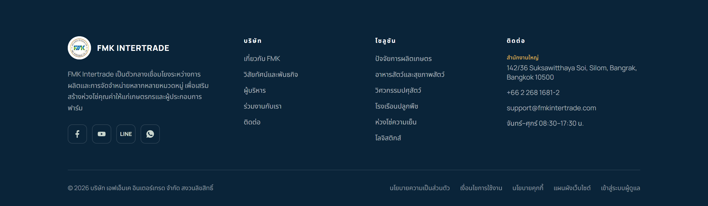
ทางนี้เหมาะกับการใช้งานทั่วไป เพราะไม่ต้องจำที่อยู่อะไรเลย เปิดเว็บบริษัทแล้วเลื่อนลงล่างสุด ลิงก์นี้เห็นได้ทั้งบนคอมพิวเตอร์และมือถือ
เร็วกว่าถ้าใช้บ่อย แนะนำให้บันทึกไว้ในบุ๊กมาร์ก
https://fmkintertrade.shop/admin/login.php
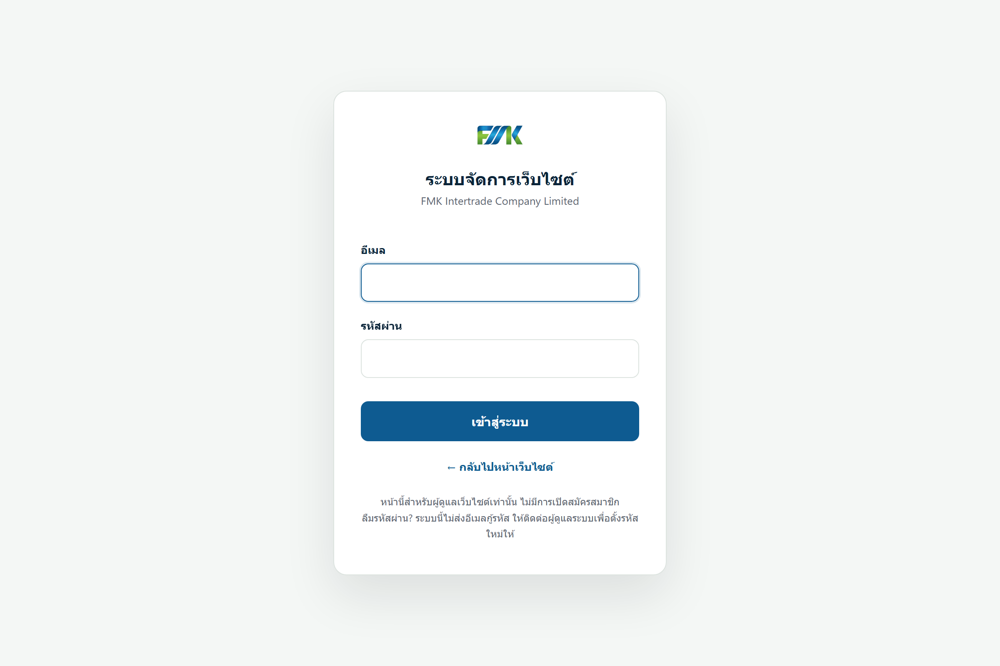
ใส่อีเมลและรหัสผ่านที่ผู้ดูแลระบบส่งให้ ครั้งแรกที่เข้า ระบบจะบังคับให้ตั้งรหัสผ่านใหม่ทันที ก่อนทำอย่างอื่นได้ เพราะรหัสที่ส่งต่อกันมานั้นผ่านมือคนอื่นแล้ว
ใช้เข้าได้เฉพาะหลังบ้านเว็บไซต์เท่านั้น การเปลี่ยนรหัสที่นี่ไม่กระทบอีเมลหรือระบบอื่นใดของบริษัท
เป็นการป้องกันคนไล่เดารหัส ถ้าโดนล็อกให้รอครบ 15 นาทีแล้วลองใหม่ ไม่ต้องแจ้งใคร
ระบบจะให้ล็อกอินใหม่เมื่อไม่มีความเคลื่อนไหวเกิน 30 นาที และอย่างช้าที่สุดทุก 8 ชั่วโมง ถึงจะไม่ได้ปิดหน้าต่างก็ตาม
เข้ามาแล้วจะเจอหน้าหลัก ซึ่งสรุปทุกอย่างไว้ในหน้าเดียว
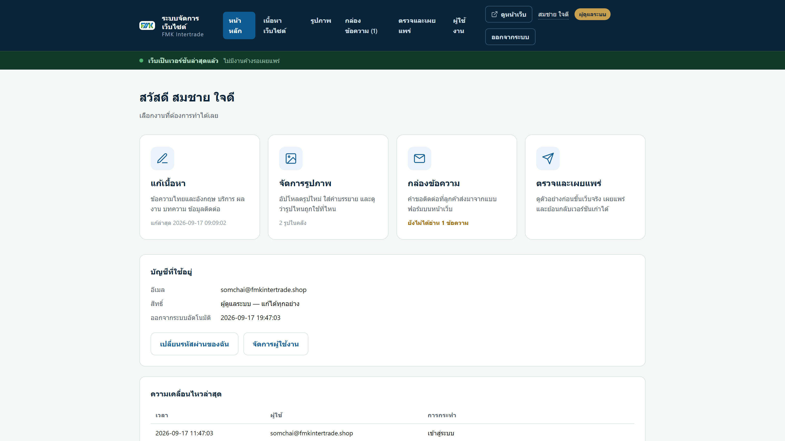
| เมนู | ใช้ทำอะไร |
|---|---|
| หน้าหลัก | ภาพรวม จำนวนเนื้อหาแต่ละชนิด และความเคลื่อนไหวล่าสุด |
| เนื้อหาเว็บไซต์ | แก้ข้อความทุกจุดบนหน้าเว็บ ทั้งไทยและอังกฤษ |
| รูปภาพ | อัปโหลดและเก็บรูปไว้ใช้ในหน้าเว็บ |
| กล่องข้อความ | คำขอติดต่อที่ลูกค้าส่งเข้ามาจากแบบฟอร์มบนเว็บ |
| ตรวจและเผยแพร่ | ดูตัวอย่าง กดขึ้นเว็บจริง และย้อนกลับเวอร์ชันเก่า |
| ผู้ใช้งาน | เพิ่มและจัดการบัญชี — เห็นเฉพาะผู้ดูแลระบบ |
แถบนี้อยู่ทุกหน้า บอกสถานะของเว็บจริงตลอดเวลา มีสองแบบเท่านั้น
การแก้ไขจะไม่ขึ้นเว็บจริงจนกว่าจะกดเผยแพร่ นี่เป็นเรื่องตั้งใจ คุณจึงแก้ค้างไว้ข้ามวันได้ แก้ผิดแล้วแก้ใหม่ได้ โดยที่ลูกค้าไม่เห็นอะไรผิดปกติเลย
พิมพ์แก้ในหน้าเนื้อหาเว็บไซต์ แล้วกดบันทึกฉบับร่าง เก็บไว้ในระบบ ยังไม่ขึ้นเว็บ
เปิดดูว่าหน้าเว็บจะออกมาหน้าตาแบบไหน ตรวจให้ครบทั้งไทยและอังกฤษ
กดปุ่มเดียว เว็บจริงเปลี่ยนทันที และระบบเก็บสำเนาเวอร์ชันเก่าไว้ให้ย้อนกลับได้
แก้แล้วเว็บไม่เปลี่ยน = ยังไม่ได้กดเผยแพร่ ไม่ใช่ระบบเสีย
เข้าเมนู เนื้อหาเว็บไซต์ เนื้อหาทั้งเว็บถูกจัดเป็นหมวดตามตำแหน่งที่ปรากฏจริงบนหน้าเว็บ เลือกหมวดจากแถบด้านซ้าย
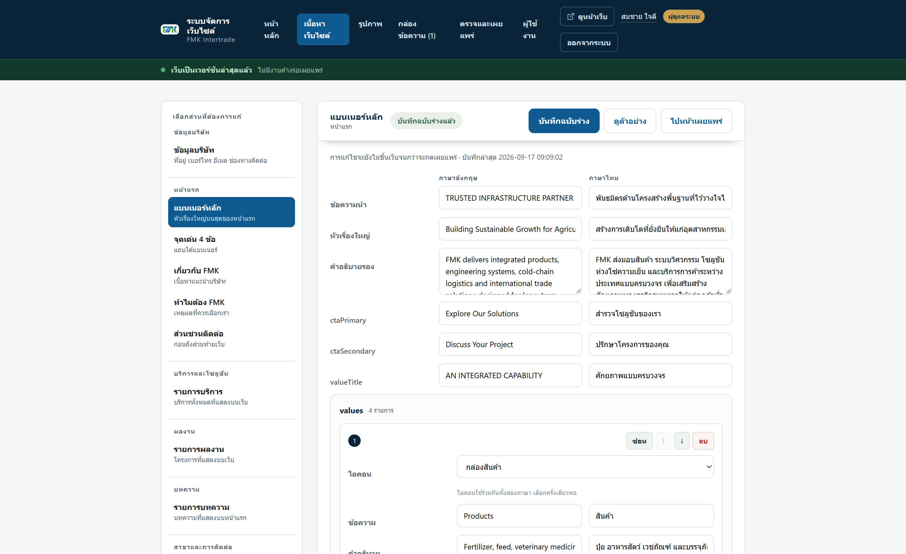
| หมวด | คุมส่วนไหนของหน้าเว็บ |
|---|---|
| ข้อมูลบริษัท | ที่อยู่ เบอร์โทร อีเมล ช่องทางติดต่อ |
| หน้าแรก | แบนเนอร์ใหญ่ จุดเด่น 4 ข้อ เกี่ยวกับ FMK ทำไมต้อง FMK ส่วนชวนติดต่อ |
| บริการและโซลูชัน | การ์ดบริการทั้ง 6 ใบ |
| ผลงาน | โครงการที่แสดงบนเว็บ |
| บทความ | บทความที่แสดงบนหน้าแรก |
| สาขาและการติดต่อ | สาขาในไทยและต่างประเทศ กล่องติดต่อ และชื่อช่องในแบบฟอร์ม |
| เมนูและส่วนท้าย | แถบบนสุด เมนูนำทาง ข้อความบนปุ่ม ส่วนท้ายเว็บ |
| ข้อความระบบ | ข้อความช่วยผู้ใช้โปรแกรมอ่านหน้าจอ และคำบรรยายใต้โลโก้ |
ทุกข้อความมีสองช่อง วางคู่กัน แก้ฝั่งหนึ่งแล้วต้องแก้อีกฝั่งด้วย ไม่งั้นลูกค้าต่างชาติจะเห็นข้อความเก่า
กด บันทึกฉบับร่าง เมื่อแก้เสร็จแต่ละรอบ กดบ่อยได้ไม่มีผลเสีย ถ้าพยายามปิดหน้าต่างทั้งที่ยังไม่บันทึก เบราว์เซอร์จะเตือนก่อน
หมวดบริการ ผลงาน บทความ สาขา และช่องทางติดต่อ เป็นรายการที่จัดการทีละชิ้นได้
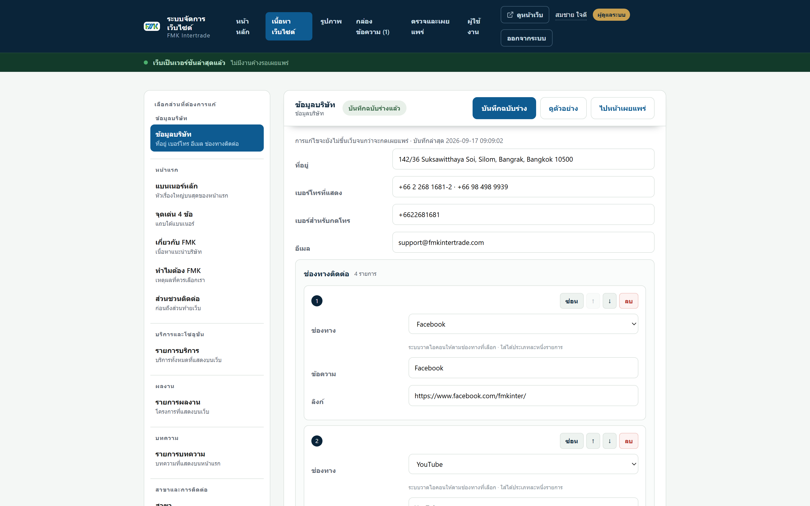
รายการที่ซ่อนจะหายจากหน้าเว็บทันทีเหมือนลบ แต่ข้อมูลยังอยู่ครบ เปิดกลับมาเมื่อไหร่ก็ได้ ส่วนการลบนั้นถ้ากดเผยแพร่ไปแล้ว จะเอากลับได้ก็ต่อเมื่อย้อนทั้งเวอร์ชัน ซึ่งจะย้อนงานอื่นกลับไปด้วย
การ์ดบทความบนหน้าเว็บมีสองสถานะคือ ปิด กับ เปิด ตอนนี้บทความทั้งสามชิ้นปิดอยู่ทั้งหมด การ์ดจึงไม่มีคำว่า “อ่านต่อ” ให้กดเลย ซึ่งตรงกับความจริงว่ายังไม่มีเนื้อหาให้อ่าน
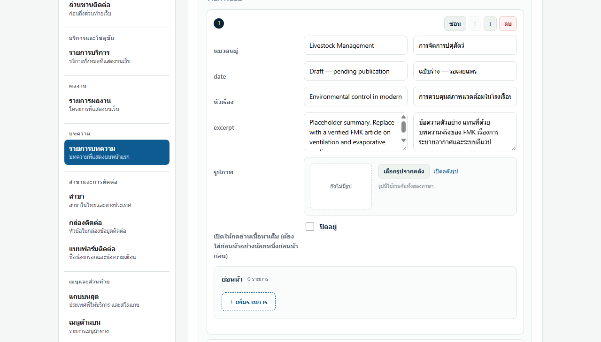
พอเผยแพร่แล้ว การ์ดใบนั้นจะมีคำว่า อ่านต่อ ขึ้นมา ผู้อ่านกดแล้วบทความจะเปิดขึ้นในหน้าเดิม ไม่ต้องกระโดดไปหน้าอื่น
ถ้าติ๊กเปิดไว้แต่ยังไม่ได้พิมพ์ย่อหน้าเลยสักย่อหน้า การ์ดจะยังไม่มีปุ่มให้กด ระบบตั้งใจทำแบบนี้ เพราะกดแล้วเจอหน้าต่างเปล่าแย่กว่าไม่มีปุ่มให้กด
เนื้อหาของบทความที่ยังปิดอยู่ ไม่ถูกส่งขึ้นหน้าเว็บเลย แม้แต่ในโค้ดเบื้องหลัง เขียนไม่เสร็จแล้วทิ้งไว้ข้ามวันข้ามสัปดาห์ได้ ไม่มีใครอ่านเจอ และ Google ก็ไม่เก็บไปแสดงในผลค้นหา
เว็บไซต์มีหน้านโยบายความเป็นส่วนตัวแยกอีกหนึ่งหน้าที่ fmkintertrade.shop/privacy.html ผู้เข้าชมไปถึงได้จากลิงก์ท้ายเว็บ และจากในแบบฟอร์มติดต่อใต้ช่องติ๊กยินยอม
แก้ข้อความได้ที่ เนื้อหาเว็บไซต์ แล้วเลือกหมวด นโยบายความเป็นส่วนตัว วิธีแก้เหมือนเนื้อหาส่วนอื่นทุกประการ และต้องกดเผยแพร่เหมือนกัน
หัวข้อ 7 ของนโยบายระบุว่าเก็บข้อความจากแบบฟอร์มไว้ 2 ปี และเก็บบันทึกกันสแปมไว้ 90 วัน เป็นตัวเลขตั้งต้นที่บริษัทเปลี่ยนเองได้ นอกจากนี้ถ้าเซิร์ฟเวอร์ที่ใช้อยู่ตั้งอยู่นอกประเทศไทย ต้องเพิ่มข้อความแจ้งเรื่องการส่งข้อมูลข้ามประเทศด้วย
เมนู รูปภาพ คือคลังกลาง อัปโหลดเก็บไว้ที่นี่ครั้งเดียว แล้วเรียกใช้ในหน้าเนื้อหาได้ทุกจุด
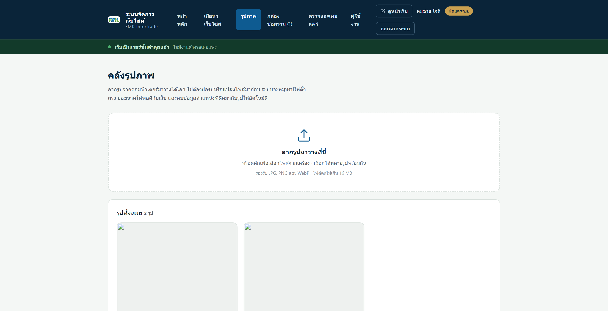
ถ่ายจากมือถือแล้วอัปได้เลย ไม่ต้องย่อมาก่อน แต่ระบบจะแสดง ทั้งรูปตามที่อัปขึ้นไป ยังตัดรูปในระบบไม่ได้ ถ้าอยากได้เฉพาะบางส่วนของภาพ ให้ตัดมาก่อนแล้วค่อยอัป
คนตาบอดใช้โปรแกรมอ่านหน้าจอ ซึ่งอ่านข้อความนี้แทนการเห็นรูป และ Google ใช้ข้อความนี้เข้าใจว่ารูปคืออะไร เขียนสั้น ๆ ว่าในรูปมีอะไร เช่น “โรงเรือนปศุสัตว์ระบบอีแวปที่จังหวัดสระบุรี” ไม่ใช่ “รูปที่ 1”
การลบรูปออกจากคลังทำได้ แต่ถ้ารูปนั้นถูกใช้อยู่ในหน้าเว็บ ให้ไปเปลี่ยนรูปในหน้าเนื้อหาก่อน ไม่งั้นจุดนั้นจะกลายเป็นรูปว่าง
แบบฟอร์มติดต่อบนหน้าเว็บส่งข้อมูลเข้ามาเก็บที่เมนู กล่องข้อความ ตัวเลขข้างชื่อเมนูคือจำนวนที่ยังไม่ได้อ่าน
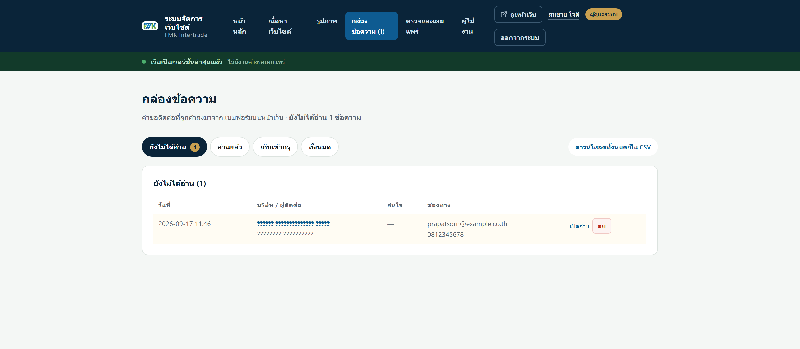
| แท็บ | หมายถึง |
|---|---|
| ยังไม่ได้อ่าน | เข้ามาใหม่ ยังไม่มีใครเปิดดู |
| อ่านแล้ว | เปิดดูแล้ว กำลังดำเนินการอยู่ |
| เก็บเข้าคลัง | จบเรื่องแล้ว เก็บไว้เป็นประวัติ |
| ทั้งหมด | ทุกสถานะรวมกัน |
กด เปิดอ่าน เพื่อดูรายละเอียดครบทุกช่องที่ลูกค้ากรอก การเปิดอ่านจะเปลี่ยนสถานะให้อัตโนมัติ ปุ่ม ดาวน์โหลดทั้งหมดเป็น CSV ใช้ส่งต่อให้ฝ่ายขายหรือเปิดใน Excel
ระบบเก็บข้อมูลอย่างเดียว การติดต่อกลับเป็นหน้าที่ของคนทำงาน ใช้อีเมลหรือเบอร์โทรที่ลูกค้าให้ไว้
และ ระบบไม่ส่งอีเมลแจ้งเตือนเมื่อมีคำขอใหม่ ต้องเข้ามาเปิดดูเอง จึงควรตกลงกันให้ชัดว่าใครเป็นคนเปิดกล่องข้อความ และเปิดวันละกี่ครั้ง
ระบบคัดกรองบอทให้อยู่แล้วหลายชั้น คำขอที่เห็นในกล่องจึงผ่านการคัดมาแล้ว ถ้าเจอข้อความขยะหลุดเข้ามา กด ลบ ได้เลย
เมนู ตรวจและเผยแพร่ คือจุดเดียวที่ทำให้เว็บจริงเปลี่ยน
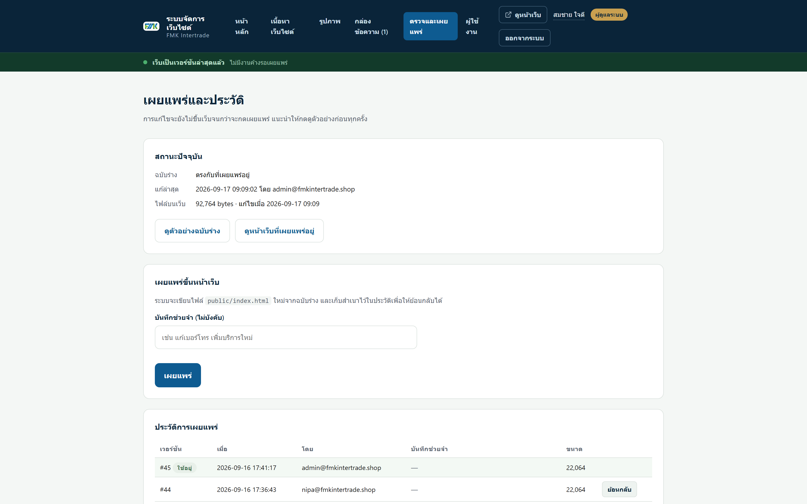
การกดเผยแพร่หนึ่งครั้งจะเขียนใหม่ทั้ง หน้าแรก และ หน้านโยบายความเป็นส่วนตัว พร้อมกัน ข้อความยืนยันจะบอกขนาดของทั้งสองไฟล์ แยกเผยแพร่ทีละหน้าไม่ได้ และไม่จำเป็นต้องแยก
บันทึกช่วยจำไม่บังคับ แต่มีประโยชน์มากในวันที่ต้องย้อนกลับ เพราะจะรู้ทันทีว่าควรย้อนไปเวอร์ชันไหน
ทุกครั้งที่เผยแพร่ ระบบเก็บสำเนาไว้ในตาราง ประวัติการเผยแพร่ กด ย้อนกลับ ที่เวอร์ชันที่ต้องการ
กดย้อนกลับ = ดึงเนื้อหาเก่ามาเป็น ฉบับร่าง เท่านั้น เว็บจริงยังไม่เปลี่ยน ให้ตรวจดูตัวอย่างก่อน แล้วจึงกดเผยแพร่อีกครั้ง
การย้อนกลับเวอร์ชันทำได้เฉพาะผู้ดูแลระบบ ส่วนการเผยแพร่ตามปกติทำได้ทั้งสองสิทธิ์
กดที่ชื่อของคุณมุมขวาบนเพื่อเข้าหน้านี้ ทำได้สามอย่าง
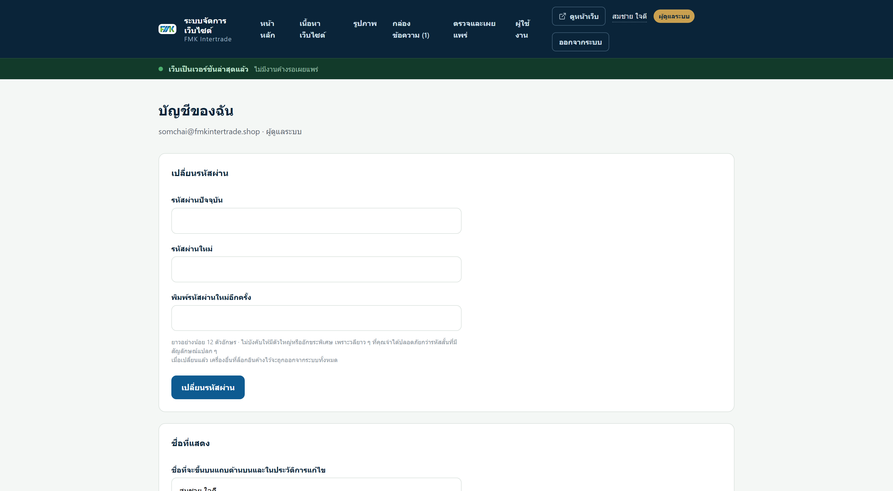
เข้าหน้านี้แล้วสั่งออกจากระบบอุปกรณ์อื่นทั้งหมด เครื่องที่คุณใช้อยู่ตอนนี้จะไม่ถูกเตะออก
หัวข้อนี้เฉพาะ ผู้ดูแลระบบ เมนู ผู้ใช้งาน
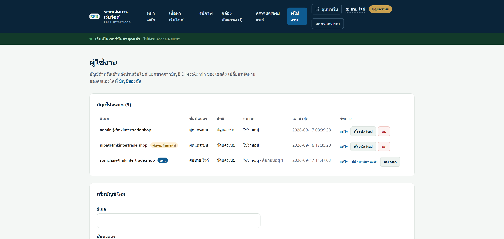
| สิทธิ์ | ทำอะไรได้ |
|---|---|
| ผู้แก้ไขเนื้อหา | แก้เนื้อหา จัดการรูป อ่านกล่องข้อความ และเผยแพร่ |
| ผู้ดูแลระบบ | ทุกอย่างข้างต้น บวกกับย้อนกลับเวอร์ชัน และจัดการบัญชีผู้ใช้ |
ให้สิทธิ์เท่าที่แต่ละคนต้องใช้จริง คนที่มีหน้าที่แก้ข้อความอย่างเดียว ไม่จำเป็นต้องเป็นผู้ดูแลระบบ
กรอกอีเมลและเลือกสิทธิ์ ระบบจะสุ่มรหัสผ่านให้และ แสดงเพียงครั้งเดียว คัดลอกส่งให้เจ้าตัวก่อนปิดหน้า เขาจะถูกบังคับให้ตั้งรหัสใหม่ทันทีที่เข้าครั้งแรก
ส่งรหัสให้เจ้าตัว คนละช่องทางกับที่ส่งชื่ออีเมล เช่น อีเมลบอกชื่อบัญชี แล้วโทรบอกรหัส
ให้ผู้ดูแลระบบอีกคนกด ตั้งรหัสใหม่ ที่แถวของคนนั้น ระบบจะสุ่มรหัสใหม่ให้และเตะเขาออกจากทุกอุปกรณ์
ระบบนี้ ไม่มีปุ่มส่งลิงก์กู้รหัสทางอีเมล — เป็นการตัดสินใจที่ตั้งใจ เพราะต้องพึ่งบริการภายนอกซึ่งเพิ่มทั้งค่าใช้จ่ายและช่องโหว่ การกู้จึงทำโดยผู้ดูแลอีกคนเท่านั้น ถ้าผู้ดูแลลืมรหัสพร้อมกันทุกคน จะเข้าหลังบ้านไม่ได้เลย และต้องเรียกช่างเข้าไปแก้ที่เซิร์ฟเวอร์
ระบบจึงไม่ยอมให้ลบหรือลดสิทธิ์ผู้ดูแลระบบคนสุดท้ายที่เหลืออยู่
ระบบจะสุ่มรหัสให้แล้วเตะคุณออกทันที ถ้าคัดลอกไม่ทันจะเข้าไม่ได้ แถวของคุณเองจึงขึ้นเป็นลิงก์ เปลี่ยนรหัสของฉัน แทน ใช้ทางนั้น
เมื่อมีคนลาออก ให้ตั้งสถานะเป็น ปิดการใช้งาน แทนการลบ เพราะการลบจะทำให้ชื่อในประวัติการแก้ไขหายไปด้วย
| อาการ | สาเหตุและวิธีแก้ |
|---|---|
| แก้แล้ว แต่เปิดเว็บจริงยังเป็นของเดิม | สาเหตุที่พบบ่อยที่สุดคือยังไม่ได้กดเผยแพร่ — ดูแถบสถานะใต้เมนู ถ้าเผยแพร่แล้วจริง ให้กด Ctrl+F5 เพื่อบังคับโหลดใหม่ |
| เข้าระบบไม่ได้ ขึ้นว่าถูกล็อก | ใส่รหัสผิดเกิน 5 ครั้ง รอ 15 นาทีแล้วลองใหม่ |
| ลืมรหัสผ่าน | ให้ผู้ดูแลระบบอีกคนตั้งรหัสใหม่ให้ที่เมนูผู้ใช้งาน |
| อยู่ดี ๆ ก็เด้งออกมาหน้าล็อกอิน | ไม่ได้ทำอะไรเกิน 30 นาที หรือเปิดค้างครบ 8 ชั่วโมง เป็นการทำงานตามปกติของระบบ |
| อัปรูปแล้วขึ้นว่าไม่สำเร็จ | ตรวจว่าไฟล์ไม่เกิน 16 MB และเป็น JPG PNG หรือ WebP — ไฟล์จาก PDF หรือ HEIC จากไอโฟนบางรุ่นจะไม่ผ่าน |
| บันทึกไม่ได้ ขึ้นข้อความสีแดง | อ่านข้อความนั้น ส่วนใหญ่คือมีช่องที่ต้องกรอกแต่ยังว่าง ข้อความจะบอกว่าช่องไหน — ข้อความที่พิมพ์ไว้ยังอยู่ครบ ไม่หาย |
| ปิดแท็บแล้วเบราว์เซอร์เตือน | ยังมีของที่แก้ไว้แต่ไม่ได้บันทึก กดยกเลิกแล้วกดบันทึกฉบับร่างก่อน |
| เห็นแถบแดงเตือนเรื่องไฟล์บนเว็บ | แจ้งผู้ดูแลระบบทันที มีไฟล์ที่ไม่ควรค้างอยู่บนเซิร์ฟเวอร์ |
อย่าเดาแล้วกด โดยเฉพาะปุ่มที่มีคำว่า ลบ หรือ ย้อนกลับ ถ่ายภาพหน้าจอเก็บไว้แล้วถามก่อนที่ dev@mcs.co.th